Avik De
Adjunct Associate Professor
Electrical and Systems Engineering
University of Pennsylvania
LLMs = informational work
Fundamental contraints are in computing energetics, algorithm stability/efficiency, …
This approach is relatively rare!
Massive practical success in robotics (locomotion, dexterous manipulation, agile flight)
Process:
s' = \text{Sim}(s, a)
reminds of
s' \sim P(s, a)
Simulator is a (deterministic) model!
The simulator need to be perfect!
Fallacy: The simulator is an inaccurate dynamics model – goal of sim2real is to embrace that and still transfer policies to the real world
The purpose of the simulator is just to simulate the world faster than physics.
Fallacy: There can be benefits even if the sim is slower (we will see them)
The simulator must be programmed with the laws of physics.
Fallacy: They can be data-driven (learned dynamics model) or hybrid
Is this model-based or model-free RL?
Sim is a hand-crafted model of reality, i.e. it is technically model-based.
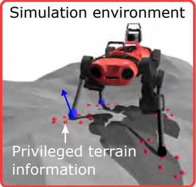
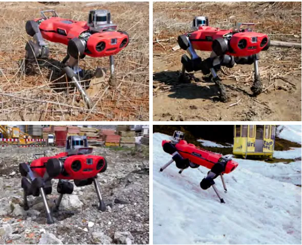
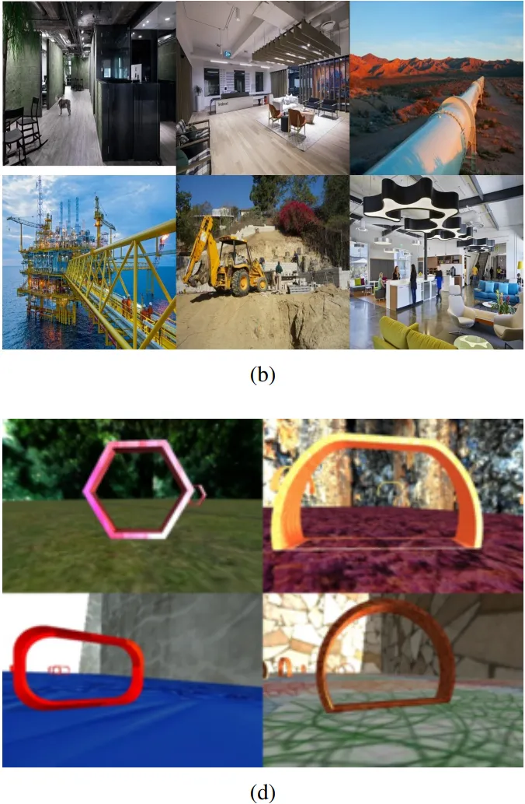
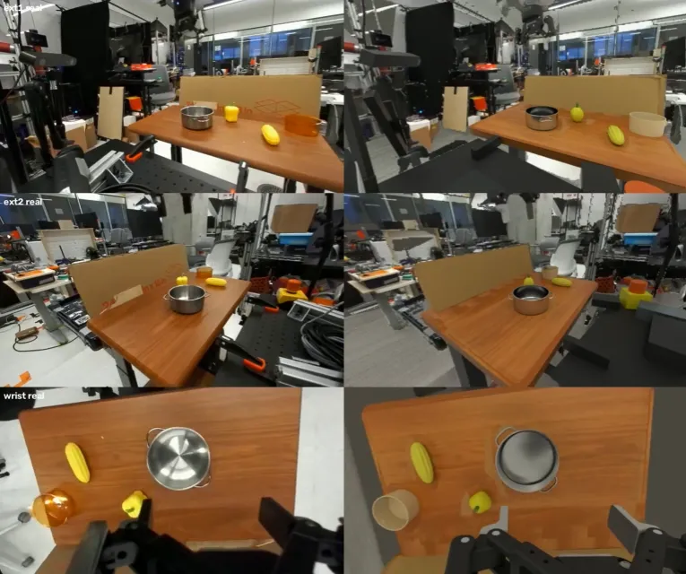
Suppose your robot is a mass-spring damper, and you need to control x:
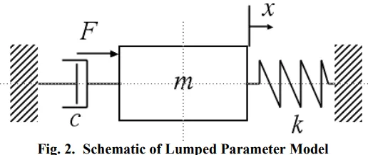
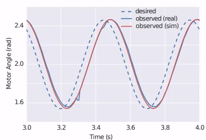
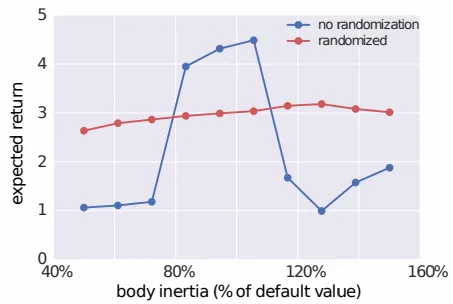
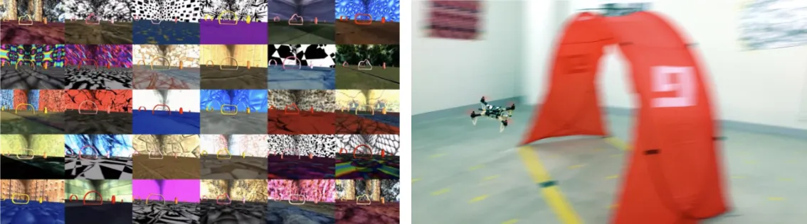
Does the policy “interpolate” inside the training distribution?
So far, we have been discussing a = \pi(s)
Is this abstraction-free?
torque_cmd -> current_cmd -> voltage, so maybe we should use voltage“End-to-end” is often a myth! Sensor and control abstractions are very common.
Bias vs. sample-efficiency tradeoff
Torque vs. Velocity vs. PD vs. musculotendon (MTU)
In practice, joint impedance (PD) is extremely common
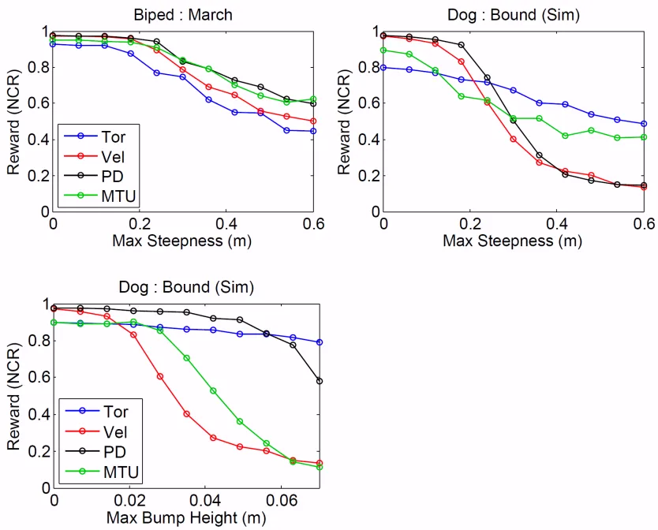
(Simulated) image -> Perception ->
Goal direction + speed (Sensor Abstraction)
-> Policy -> Action
What are some “pros” of this abstraction?
What are some “cons” of this abstraction?
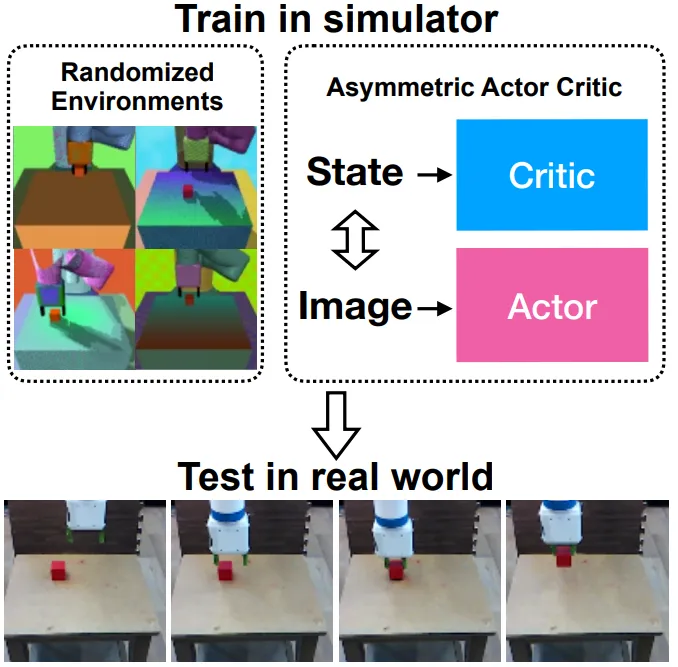
Actor must still learn perception/history representation and control simultaneously
Case where sim2real has a benefit even if it is slower!
Theoretically critic needs to be privileged
Student doesn’t need ground-truth parameters, only task-relevant latent combinations that are identifiable from history
What do you think the teacher/student observations would be?
Teacher gets:
Student gets:
Combines
We are still
SHAC (Xu et al., 2022) used in (Schwarke et al., 2024)
All models are wrong, but some are useful.
— George Box
TD-MPC2 (Hansen et al., 2024)
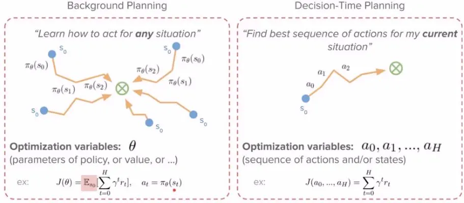
DTC: Deep Tracking Control (Jenelten et al., 2024)
TO -> reference trajectories -> RL
Disadvantage:
The computational power of the physical world scales linearly with the number of particles. Think of pouring sand. Every sand particle computes its interactions with other particles. The more particles, the more computation. Thus the amount of computation scales linearly with the number of particles. None of our computer devices can provide such computational power. Assuming that accurate simulation of physical behavior is important for robotics, this appears to be a fundamental challenge for the simulation approach.
— Rodney Brooks
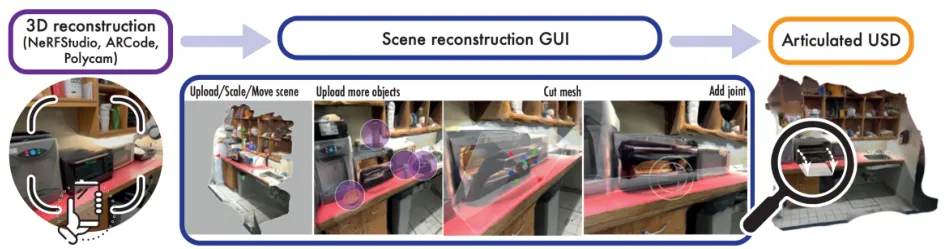
Gemini Argon, GPT Astra etc. are bringing new Real2Sim possibilities
From before: “reward is enough” philosophy
We would like methods that can use demonstrations combined with RL